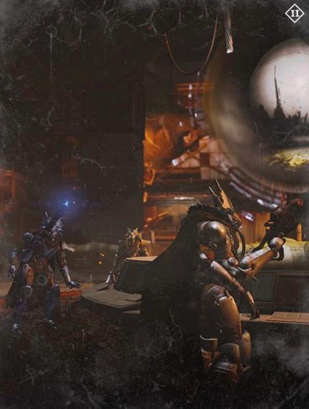
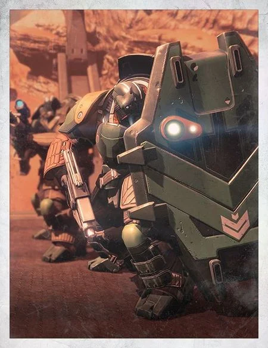
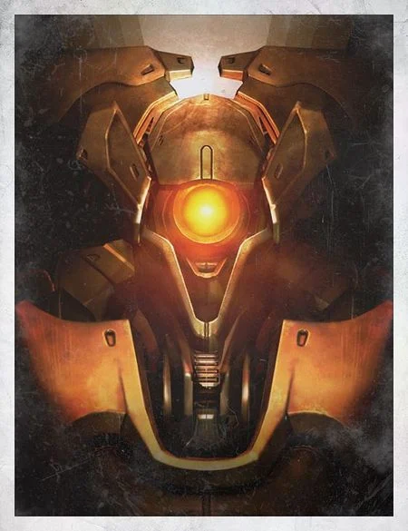
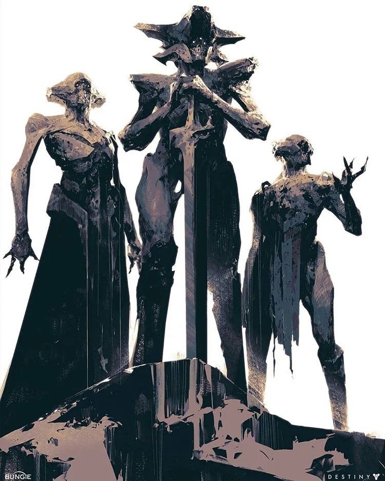
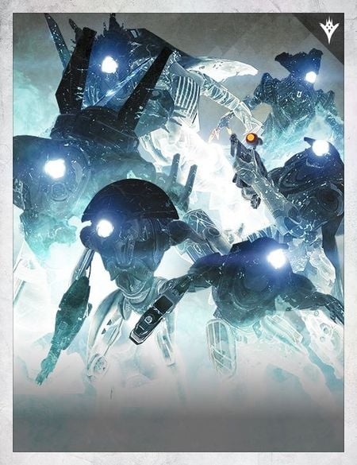

The Different Races and Factions
Destiny and Destiny 2 has several different opposing factions that makes up the forces of the Darkness that humanity has to fight, this is but a brief summary on what these races are. The Fallen are group of space pirates, the Cabal are warmongering space rhinos, the Vex are time traveling robots, the Hive is an entire species devoted to killing and the Taken are a combination of all the previous enemies that follows the will of a God for they lost their own.
- Fallen
- Cabal
- Vex
- Hive
- Taken
| Fallen |
|---|
|  |
The Fallen, also known as the Eliksni in their own tongue, are an alien race that looks similar to that of insects and are infamous for looting and raiding anything they get their claws on. Their civilization was once a mighty society that lived with the Traveler's protection and grace, now they are nothing more than mere scavengers.
| Cabal |
|---|
|  |
The Cabal is a race known throughout the universe by their desire for war and glory. They are a heavy militarist society that rules on gladiatorial combat and glory earned through war. They are seen as a race having similarities to that of a rhino, were they walking on two legs.
| Vex |
|---|
|  |
The Vex are a group of time traveling robots that is as ancient as the entire universe and are described as living metal. They are one collective intelligence that is distributed across realities. They work tirelessly to convert planets and galaxies into massive machinery to create more of them.
| Hive |
|---|
|  |
The Hive were formerly known as the krill back in their home planet on fundament, but now has gained the power to go across entire galaxies with the help of the the worm gods. The culture of the hive is based around one defining logic that they all must follow, the the sword logic which specifies that they must kill to provide tithes to their deities and gain immense power.
| Taken |
|---|
|  |
The Taken are all of the previous enemies so far but they have been twisted and corrupted by the Darkness itself. They have no will of thgeir own but oinly follow the will of the one who has taken their will, the Taken King.